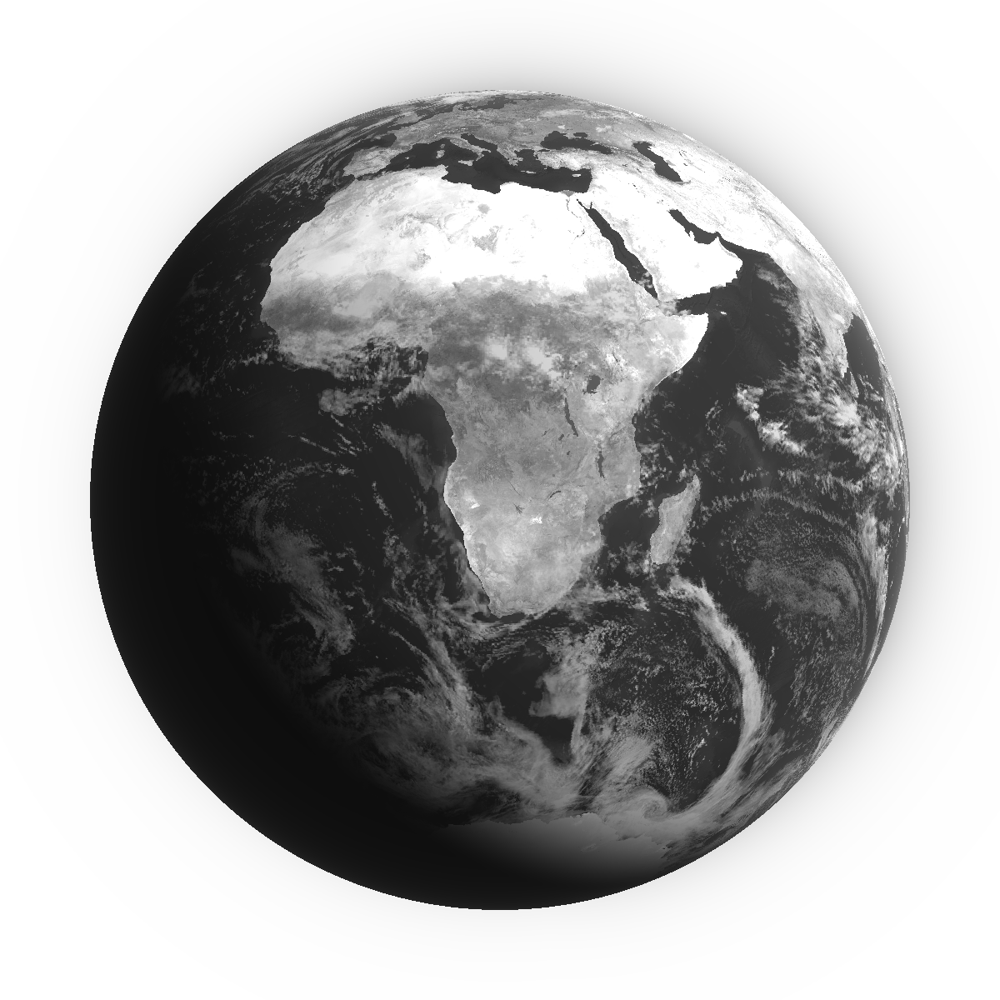

Demo · not linked from the site
The world, in monochrome
Drag to turn the planet; scroll, pinch or use the buttons to zoom. Find a city and the globe flies there and draws its streets as dots.

Imagery NASA · Streets © OpenStreetMap contributors · Tiles OpenFreeMap © OpenMapTiles
About this demo: imagery, data and services
Imagery (NASA, public domain)
All four maps are NASA imagery, which is not copyrighted; NASA asks for a credit. They were converted to greyscale and compressed by tools/globe-textures.py, which records the exact source files.
- Land and ocean: Blue Marble: Next Generation with topography and bathymetry, August 2004 (NASA Earth Observatory, Reto Stöckli, NASA GSFC).
- Relief: Topography from the GEBCO_08 grid (NASA Earth Observatory, Jesse Allen). Imagery reproduced from the GEBCO_08 Grid, www.gebco.net.
- Clouds: Blue Marble 2002 cloud cover (
cloud_combined_2048, NASA GSFC, Reto Stöckli and Robert Simmon, MODIS). The storm systems are drawn procedurally in the cloud layer and are not real weather. - Night lights: Black Marble 2016 (Suomi NPP VIIRS), rendered through NASA GIBS.
Streets and city search (OpenStreetMap)
Street dots are built from OpenStreetMap data, © OpenStreetMap contributors, available under the Open Database License. The streets around a chosen city come as vector tiles from OpenFreeMap (© OpenMapTiles): nine tiles on a desktop, four on a phone, fetched once per city. OpenFreeMap is free, needs no key, allows commercial use and asks only for this attribution; it runs on donations, with no service guarantee. If the tiles cannot be fetched, the page falls back to the public Overpass API, which is much slower in dense cities. A typed city that is not in the built-in list is looked up with Nominatim, on submit only, as its usage policy requires (no autocomplete, at most one request a second).
Privacy
“Use my location” asks the browser for permission only when clicked. The coordinates are used to fly to the place and to fetch the streets around it, and are not stored or logged by this site.
Rendering
WebGL, written for this page (no framework). The globe loads once it is on screen, pauses when the tab is hidden or the globe scrolls away, uses smaller textures and fewer storms on phones, holds still when the system asks for reduced motion, and shows the still image above when WebGL is unavailable.